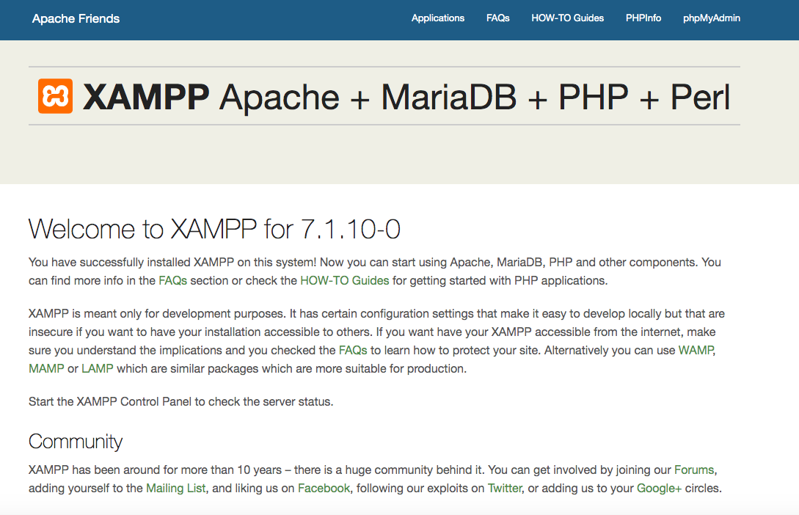
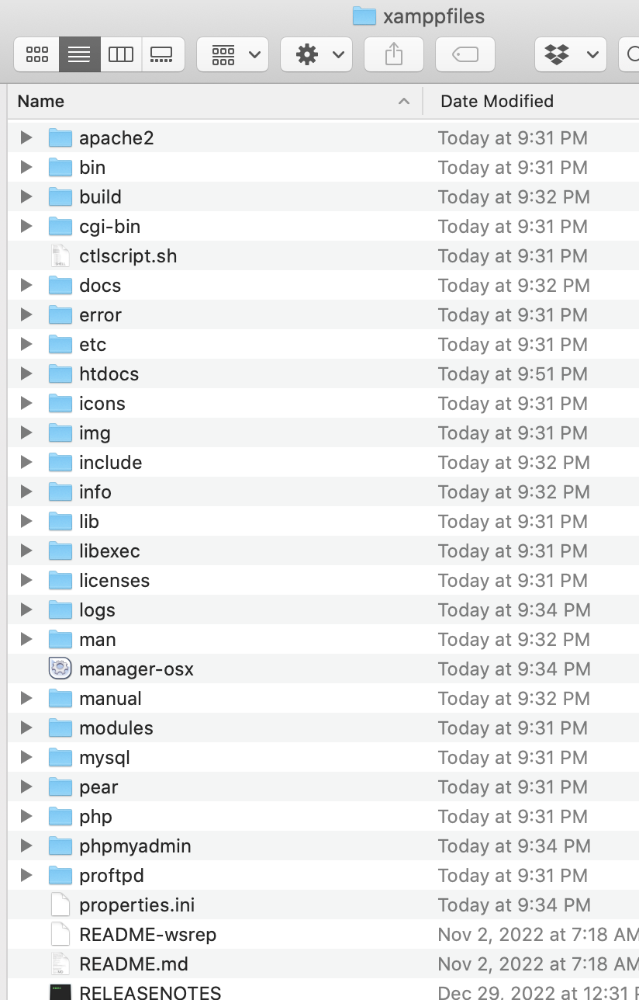
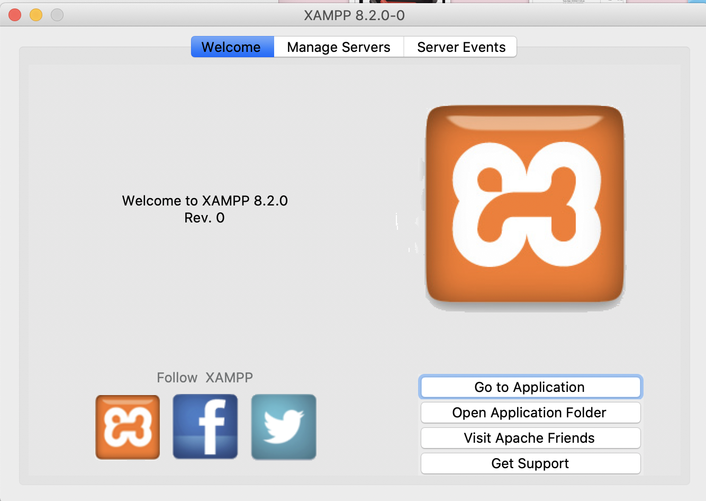
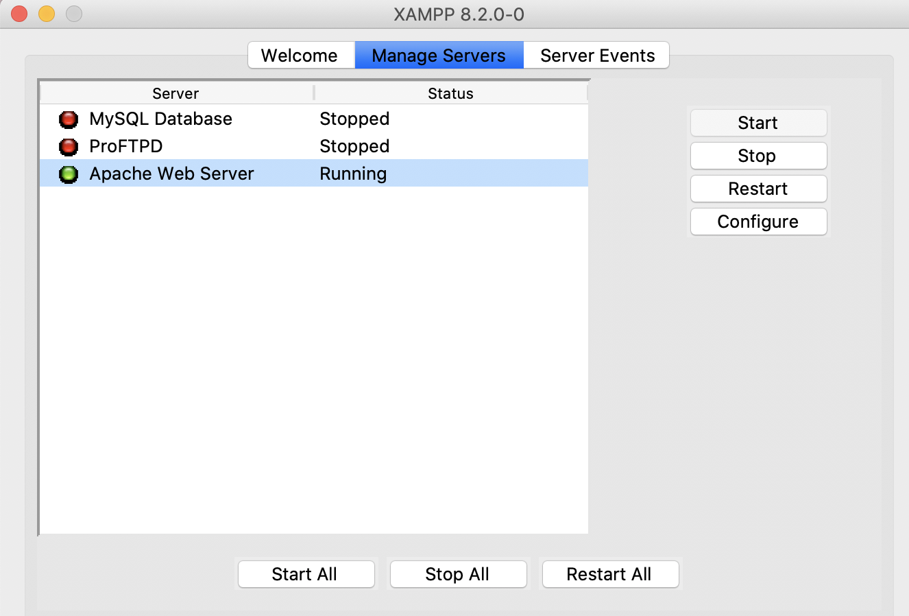
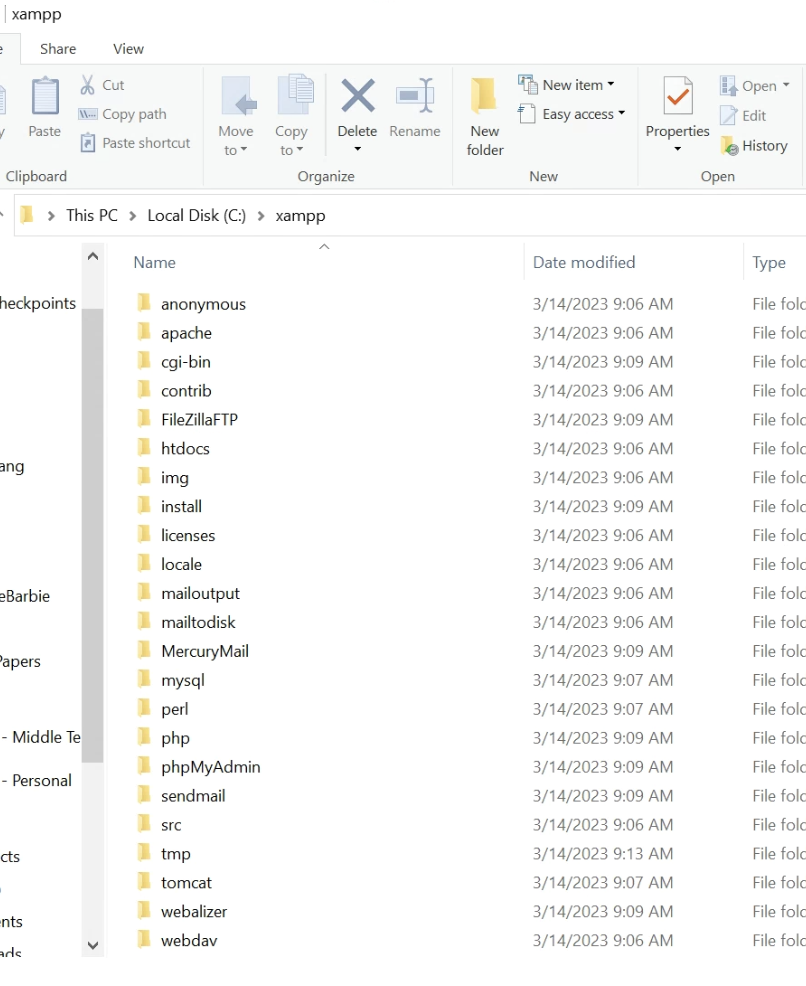
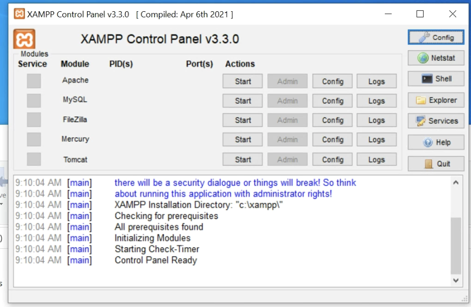

Web Servers
A Web Server is a computer or software that stores, processes, and delivers web pages to users via the Internet.Overview
- ★ Web server is a computer where the web content is stored.
- ★ Basically a web server is used to host the web sites, but there exist other web servers also, such as gaming, storage, FTP, email etc.
- ★ Web site is a collection of web pages while web server is a software that responds to the request for web resources.
Common Uses of Web Servers
- Hosting websites (HTML, CSS, JavaScript, PHP, Python, etc.).
- Handling client requests via the HTTP protocol.
- Serving files (images, videos, downloads).
- Running web applications (dynamic content, user logins, etc.).
- Acting as an API server for mobile and desktop applications.
Web Server Working
- ★ Web server respond to the client request in either of the following two ways:
- ☆ Sending the file to the client associated with the requested URL.
- ☆ Generating response by invoking a script and communicating with database.

- ★ PHP
- ★ Python
- ★ Java
- ★ and others.
Popular Web Servers
| Server | Description |
|---|---|
| Apache HTTP Server | This is the most popular web server in the world developed by the Apache Software Foundation. Apache web server is an open source software and can be installed on almost all operating systems including Linux, UNIX, Windows, FreeBSD, Mac OS X and more. About 60% of the web server machines run the Apache Web Server. |
| NGINX | Nginx was created to solve the so-called c10k problem, meaning that a web server that uses threads to handle user requests is unable to manage more than 10,000 connections at the same time. |
| Internet Information Services (IIS) | The Internet Information Server (IIS) is a high performance Web Server from Microsoft. This web server runs on Windows NT/2000 and 2003 platforms (and may be on upcoming new Windows version also). IIS comes bundled with Windows NT/2000 and 2003; Because IIS is tightly integrated with the operating system so it is relatively easy to administer it. |
| Lighttpd | The lighttpd, pronounced lighty is also a free web server that is distributed with the FreeBSD operating system. This open source web server is fast, secure and consumes much less CPU power. Lighttpd can also run on Windows, Mac OS X, Linux and Solaris operating systems. |
| Sun Java System Web Server | This web server from Sun Microsystems is suited for medium and large web sites. Though the server is free it is not open source. It however, runs on Windows, Linux and UNIX platforms. The Sun Java System web server supports various languages, scripts and technologies required for Web 2.0 such as JSP, Java Servlets, PHP, Perl, Python, and Ruby on Rails, ASP and Coldfusion etc. |
| Jigsaw Server | Jigsaw (W3C's Server) comes from the World Wide Web Consortium. It is open source and free and can run on various platforms like Linux, UNIX, Windows, and Mac OS X Free BSD etc. Jigsaw has been written in Java and can run CGI scripts and PHP programs. |
Apache HTTP Server
- ★ Apache is an open-source and free web server software.
- ★ It powers around 46% of websites around the world.
- ★ It’s maintained and developed by the Apache Software Foundation.
- ★ The first version was released in 1995.
How Does Apache Web Server Work?
- ★ Apache Web Server is not a physical server, but rather a software that runs on a server.
- ★ Its job is to establish a connection between a server and the browsers of website visitors (Firefox, Google Chrome, Safari, etc.) while delivering files back and forth between them (client-server structure).
- ★ Apache is a cross-platform software, therefore it works on both Unix and Windows servers.
- ★ Their browser sends a request to your server.
- ★ Apache returns a response with all the requested files (text, images, etc.).
- ★ The server and the client communicate through the HTTP protocol.
- ★ Apache is responsible for the smooth and secure communication between the two machines.
- ★ Modules allow server administrators to turn additional functionalities on and off.
- ★ Apache has modules for security, caching, URL rewriting, password authentication, and more.
- ★ You can also set up your own server configurations through a file called .htaccess, which is an Apache configuration file supported with all Hostinger plans.
Apache vs NGINX
- ★ Since Apache uses the thread-based structure, owners of traffic-heavy websites may encounter performance problems. Nginx is one of the web servers that address the c10k problem and probably the most successful one.
- ★ Nginx has an event-driven architecture that doesn’t create a new process for each request. Instead, it handles every incoming request in a single thread. This master process manages several worker processes that perform the actual processing of requests. The event-based model of Nginx distributes user requests among worker processes in an efficient way, therefore leading to much better scalability.
- ★ If you need to manage a high-traffic website Nginx is an excellent choice, as it can do that by using minimal resources. It cannot be a coincidence that it’s used by many high-visibility websites such as Netflix, Hulu, Pinterest, and Airbnb.
- ★ However, for small and medium players, Apache comes with a handful of advantages over Nginx, such as its easy configuration, lots of modules, and a beginner-friendly environment.
Apache Pros and Cons
Pros:
- ★ Open-source and free, even for commercial use.
- ★ Reliable, stable software.
- ★ Frequently updated, regular security patches.
- ★ Flexible due to its module-based structure.
- ★ Easy to configure, beginner-friendly.
- ★ Cross-platform (works on both Unix and Windows servers).
- ★ Works out of the box with WordPress sites.
- ★ Huge community and easily available support in case of any problem.
Cons:
- ★ Performance problems on extremely traffic-heavy websites.
- ★ Too many configuration options can lead to security vulnerabilities.
Setting Up a Web Server Using XAMPP
- ★ XAMPP is the most popular PHP development environment.
- ★ XAMPP = Apache + MariaDB + PHP + Perl
MariaDB vs MySQL
- ★ MariaDB was forked from MySQL source code around version 5.5, circa 2010. Programmers at Monty Program implemented some new features, or integrated features developed by other contributors, or back-ported some features from MySQL 5.6 or 5.7.
- ★ MariaDB is mostly based on the same source code as MySQL.
- ★ MariaDB reads and writes the same database files as MySQL. MariaDB supports the same flavor of SQL query language, with a few enhancements created by MariaDB. They mostly follow the same internal architecture as MySQL, again with some minor improvements developed for MariaDB. In general, you could use MariaDB as a drop-in replacement for MySQL software without changing your queries or your data files.
- ★ However, as time goes on, MySQL develops more extensive features or changes to its internal architecture. They have more developers on staff than MariaDB, so they are making changes at a faster pace.
- ★ Gradually, MySQL and MariaDB will diverge.
XAMPP Installation
Downlaod and installation
Start services (MAC OS)
- ★ Here is what XAMPP looks like before you start services.
- ★ Click Go to Application , If you see the following webpage, XAMPP is working: 
- ★ Click Open Application Folder , you should see the following. All the html, css, javascript, php and other files are located in htdocs folder. 
- ★ Under the
Manage Servers
tab, there are three servers. You can click
Start
to start the corresponding server, or click
Start All
to start all three servers.
- ☆ Database Server
- ☆ FTP Server
- ☆ Web Server


Start services (Windows)
- ★ Here is what XAMPP looks like before you start services.
- ★ Click Start to start services of Apache and MySQL.
- ★ Click Explorer , you will find the folder named htdocs where all the html, php and other files are located. 

Test
- ★ Open your web browser and type in: http://localhost or 127.0.0.1, (for mac, if it does not work, try the IP address assigned to the server, which is 192.168.64.2 in this example.)
- ★ If you see the following webpage, XAMPP is working.
- ★ In folder htdocs , create a file named test.php, type in code:
<!DOCTYPE html> <html> <body> <h1>My first PHP page</h1> <?php echo "Hello World!"; ?> </body> </html>
What if you cannot start MySQL server?
- ★ XAMPP will use port 3306 for MySQL server. If the default port 3306 has been occupied by another process, then you cannot start the MySQL server.
- ★ You can use the following command to check if port 3306 be occupied: netstat -vanp tcp | grep 3306
- ★ If the port 3306 has been occupied, usually it has been used by another mysql process, you can use the following command to kill it: sudo pkill mysql
- ★ or You can change the port 3306 to another port number such as 3307, 3308 in the file:
- ☆ "properties.ini" (for Mac Users)
- ☆ "my.ini" (for Windows Users)
- ☆ And add the following line to 'config.inc.php' (replace '3307 with whatever port your MySQL is
running
on):
$cfg['Servers'][$i]['port'] = '3307';